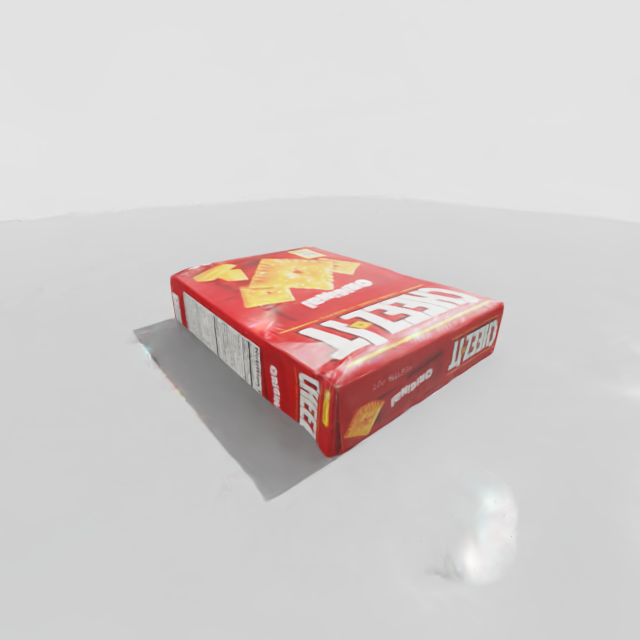
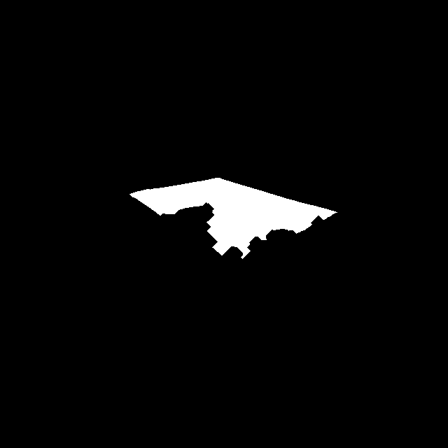

22_render_gs_depth.py（扩展）、23b_gs_to_mesh_v2.py（新）、23c_compare_meshes.py（A/B）。
| 缺陷 | 量化指标 | 直观表现 |
|---|---|---|
| 破损（洞） | 边界边 4566 条 （边界边 = 只被 1 个三角形使用的边） |
顶面白色插画 / 文字区域整片缺失，洞又大又连片，fill_holes 补不上 |
| 纹理发白 | 顶点色 chroma 均值 102/255 | 红色包装在 Isaac 里呈粉白色；数据端饱和度就偏低 |
边界边是破洞的量化手段：一个封闭曲面里每条边恰好被 2 个三角形共享； 被 1 个三角形共享的边就是「面的边缘」——每个洞贡献一圈边界边，所以边界边总数 ∝ 洞的总周长。
这条链的关键在第一环：色度衡量的是外观（颜色饱和度），掩码想要的是语义（属不属于物体）。 两者只在「红盒子 + 白桌面」这个巧合下近似等价——换成白色物体，整张图会被 mask 掉，直接得到空网格。 所以这不是「当前物体有几个洞」的问题，而是管线不具备通用性。
RGB8 模式对每个体素做多帧加权平均TSDF 在每个体素 x 上维护一个截断符号距离的加权平均：
SDF(x) = Σₖ wₖ(x) · sdfₖ(x) / Σₖ wₖ(x) sdfₖ(x) = dₖ − tₖ(x) 第 k 帧中，沿该像素射线到表面距离 dₖ 与体素深度 tₖ(x) 之差 wₖ(x) = 1, |sdfₖ| < sdf_trunc；否则 0 ← 只融合「表面附近 ±sdf_trunc」的观测
Marching Cubes 提取 SDF(x) = 0 的等值面。某区域若没有任何帧提供有效观测，
它的 SDF 分子分母都是 0（未定义）→ 不存在零交叉 → 不生成任何三角形 → 洞。
所以「洞」不是 Marching Cubes 的 bug，而是「输入观测的空洞」被忠实地传递到了输出。
修洞的唯一正路是修观测（掩码），事后补面只会伪造几何。
splatfacto 的 get_outputs()（splatfacto.py:644-649）返回四个量，其中两个和掩码设计直接相关：
accumulation = Σᵢ αᵢ·Tᵢ ∈ [0,1] 累积不透明度：射线被「实心几何」吸收的比例
αᵢ = 第 i 个高斯的不透明度，Tᵢ = 到它为止的透射率
depth (ED) = Σᵢ wᵢ·dᵢ / Σᵢ wᵢ 期望深度：按权重 wᵢ = αᵢTᵢ 加权平均的命中距离
acc.mean() = 1.000（每一帧都是）。
原因：白色桌面的背景高斯也是不透明的，射线打在物体上 acc≈1，打在桌面上同样 acc≈1。
所以 acc > 0.5 根本分不开前景和背景——它只能当有效性检查
（acc=0 表示射线什么都没打到，此时 splatfacto.py:637 会把深度填成哨兵值）。
「用一个与颜色无关的信号分前景」这个思路是对的，但选错了信号。
| 误杀（False Negative）→ 洞 | 误留（False Positive）→ 雾 | |
|---|---|---|
| 机理 | 白色插画 / 文字 / 高光的 chroma < 40 | 彩色反光、彩色噪点、带颜色的 floater |
| 后果 | 深度置 0 → 无观测 → 洞 | 伪表面被融进体素场 |
阈值 40 还是无依据的全局常数，不随光照、曝光、物体颜色自适应。
23b_gs_to_mesh_v2.py 主循环）depth_i.npy（÷SCALE=3.697 换算成米）、acc_i.npy、rgb_i.npy。p_cam = ( (u−cx)·d/fx , (v−cy)·d/fy , d ) OpenCV 相机系（z 向前） w2c = inv(c2w @ FLIP) 与 vol.integrate 用的是同一个矩阵 p_w = (p_cam − t) @ R R = w2c[:3,:3], t = w2c[:3,3]必须用同一个变换，否则掩码判据所在的坐标系和 TSDF 的不一致，掩码就白做了。
| 条件 | 阈值 | 剔除什么 |
|---|---|---|
| 深度有效 | 0.01 < d < 0.8 | GS 深度空洞 / 哨兵值 |
| 累积不透明度 | acc > 0.1 | 射线什么都没打到（此时深度是 max 哨兵） |
| footprint | |x| < 0.083, |y| < 0.107 | 桌面、背景墙等物体之外的一切 |
| 高度窗口 | 0.033 < z < 0.080 | 桌面（与物体底面同高，靠 3 mm 余量剔除） |
| 轮廓腐蚀 | binary_erosion(it=8) | 掠射角被污染的轮廓/接触带一圈（见 §6） |
depth = np.where(m, depth, 0.0) —— 黑色像素深度变 0，Open3D 视为「此处无观测」，
既不加 SDF 也不加颜色。vol.integrate(rgbd, intr, w2c)。

| 区域 | 为什么是黑的 | 是故意的吗 |
|---|---|---|
| 四周大片（桌子、背景墙） | 世界坐标落在 footprint 之外，或 z 低于「桌面+3mm」 | 是 |
| 白色区域边缘的一圈 | binary_erosion 腐蚀掉的 8 像素 | 是 |
| 白色区域内部的黑斑 / 下缘锯齿 | ① 与桌面接触带（z 落到窗口下方）② GS 深度本身的空洞 | ① 是；② 是管线上限 |
| 白色区域 | 五个条件全部通过 → 深度与颜色被融合 | 是 |
用 23d_coverage_check.py 实测：把最终网格均匀采样 4000 个点，逐点投影回每一帧，
统计「落在白区且观测深度与该点一致（±8 mm）」的次数：
| 部位 | 点数 | 平均被几帧看到 | 中位 | 从未被看到 |
|---|---|---|---|---|
| 顶面 | 962 | 36.2 | 36 | 0 |
| 上段壁面 | 1793 | 26.6 | 22 | 0 |
| 下段壁面 | 1178 | 8.9 | 7 | 18 |
| 底面 / 接触带 | 67 | 5.0 | 4 | 0 |
| 全体 | 23.3（最多 59） | 19 | 18（0.45%） | |
三个结论：
| 训练 mask（Lesson 05） | 重建 mask（本 Lesson） | |
|---|---|---|
| 作用阶段 | 训练时（nerfstudio，跑 30k 步之前） | 训练后（TSDF 重建时现算） |
| 作用对象 | loss 计算：决定哪些像素参与梯度 | 深度图：决定哪些像素的观测被融合 |
| 直接目的 | 背景 loss=0 → 梯度=0 → 不 densify → 不长 floater | 背景/污染深度=0 → TSDF 看不见 → 不生成伪表面 |
| 判据 | 图像空间的前景分割（chroma / SAM / 手工） | 世界坐标几何：footprint + 高度窗 + 腐蚀 |
| 影响对象 | 改变模型本身（高斯数量、几何质量） | 不改模型，只改「我们从模型里取哪些观测」 |
| 迭代成本 | 改了要重训（30k 步，小时级） | 改了秒级重跑重建，可反复试 |
| 本项目状态 | 没用（22/23 脚本注释：this run was trained WITHOUT a mask） | 本次新建（23b） |
一句话区分：训练 mask 决定「模型学什么」，重建 mask 决定「我们从模型里拿什么」。
想法：掩码 = footprint 内 + 桌面上方。桌面高度不写死，从数据里估—— 取 footprint 之外的点（那些一定是桌面）的世界坐标 z 做直方图众数。
估计结果：z_table = 0.0437 m
真实桌面（由 GT 网格底面验证）：z ≈ 0.030 m
后果：掩码从 0.0437+0.003 = 0.0467 开始 → 物体底部 16 mm 被切掉
bbox z 只剩 0.026 m（GT 0.0422）
把 footprint 从裁剪框（0.090 / 0.115）收紧到资产真实尺寸（0.083 / 0.107），重跑后：
| 版本 | verts | bbox x / y / z (m) | Chamfer |
|---|---|---|---|
| v1（chroma） | 34158 | 0.174 / 0.221 / 0.042 | 5.00 mm |
| 迭代①（错切底部） | 24232 | 0.164 / 0.213 / 0.026 | 3.90 mm |
| 迭代②（本步） | 61520 | 0.165 / 0.214 / 0.039 | 7.87 mm |
bbox 对了，Chamfer 却暴涨——gs→gt = 13.38 mm 说明网格里混进了大量远离 GT 的几何。
指标变差在这里是好事：它逼出了 v1 一直藏着的问题。
把网格均匀采样 8 万点，逐点算到 GT 点云的最近距离，按「高度带 × 到中轴距离带」分桶求均值。 这张表直接把误差在物体上定位：
| z 带 \ r 带 | 0–0.02 | 0.04–0.06 | 0.06–0.08 | 0.08–0.10 | 0.10–0.12 | 0.12–0.14 |
|---|---|---|---|---|---|---|
| 0.066–0.072（顶） | 0.8 | 1.4 | 1.5 | 1.4 | 1.1 | 0.8 |
| 0.060–0.066 | 1.7 | 4.1 | 4.4 | 4.2 | 1.4 | 0.9 |
| 0.054–0.060 | 9.5 | 10.1 | 10.8 | 10.1 | 3.2 | 1.0 |
| 0.048–0.054 | 13.8 | 14.9 | 16.2 | 14.9 | 4.9 | 0.9 |
| 0.042–0.048 | 20.2 | 21.8 | 22.4 | 18.3 | 4.3 | 0.8 |
| 0.036–0.042 | 25.2 | 26.9 | 27.5 | 17.4 | 2.1 | 0.9 |
| 0.030–0.036 | 29.7 | 32.3 | 32.2 | 5.0 | 1.2 | 1.2 |
单位 mm。r = 到物体中轴的水平距离（米），r>0.10 的环带基本是四壁外缘和角落。
两个规律一目了然：
3DGS 的期望深度是沿射线加权平均：ED = Σ wᵢdᵢ / Σ wᵢ。
当射线近乎平行于壁面（掠射）时，同一根射线会以不小的时间权重先后穿过
「壁面高斯」和「壁面后方桌面上的高斯」，两个命中被平均成一个——落点被拉向更远处。
在图像上，这类像素恰好集中在物体轮廓与桌面的接触带。
对每帧的 2D 掩码 m 做形态学腐蚀：
m ⊖ B = { p : Bₚ ⊆ m } 结构元 B = 8×8 邻域（iterations=8 的 3×3 十字等价于 8 次膨胀式收缩）
效果：m 的边界向内收缩 8 像素 —— 恰好剥掉「轮廓 / 接触带」这一圈被掠射污染的像素。
代价：物体在图像上变"瘦" 8 px，但 TSDF 从 63 个视角融合，真实表面仍被大量近垂直观测覆盖；
被剥掉的只是每一帧里不可信的那一圈，不是几何本身。
from scipy.ndimage import binary_erosion m = binary_erosion(m, iterations=8) # 23b_gs_to_mesh_v2.py，掩码生成之后、深度置零之前
gs→gt 从 13.38 → 3.70 mm，Chamfer 7.87 → 3.00 mm。
depth ∈ (0.01, 0.8) 且 acc > 0.1（剔除空射线与哨兵深度）|x| < 0.083, |y| < 0.107（资产真实尺寸，比 v1 裁剪框收紧 8 mm）0.033 < z < 0.080（桌面上方 3 mm 起步：桌面与物体底面同高，footprint 内有 ~8 mm 宽的桌面环带可见，靠 3 mm 余量剔除）binary_erosion(m, iterations=8)（剔除掠射污染带）世界坐标反投影（与 vol.integrate 同一套变换，保证一致）： p_cam = ( (u−cx)·d/fx , (v−cy)·d/fy , d ) OpenCV 相机系 w2c = inv(c2w @ FLIP) OpenGL→OpenCV 翻转，Lesson03 的老坑 p_w = (p_cam − t) @ R R = w2c[:3,:3], t = w2c[:3,3]
| 指标 | v1（chroma 掩码） | v2（几何掩码） | GT 参照 | 含义 |
|---|---|---|---|---|
| Chamfer | 5.00 mm | 3.00 mm（−40%） | — | 整体几何误差 |
| gs → gt | — | 3.70 mm（p95 15.5） | — | 重建里有多少假几何 |
| gt → gs | — | 2.29 mm（p95 7.1） | — | GT 表面被覆盖得多完整 |
| 边界边（破洞） | 4566 | 1136（−75%） | 378* | 洞的总周长 |
| 顶点色 chroma | 102 | 111（+9%） | — | 数据端饱和度 |
| bbox x × y × z | 0.174 × 0.221 × 0.042 | 0.164 × 0.213 × 0.036 | 0.164 × 0.213 × 0.042 | 足迹完全吻合；z 少 6 mm |
* GT 网格自身也不是完全封闭的（378 条边界边，底面几乎无顶点），所以 gt→gs 不会归零。
| 版本 | 关键改动 | verts | bbox z | Chamfer | 评价 |
|---|---|---|---|---|---|
| v1 | chroma > 40 | 34158 | 0.042 | 5.00 | 洞伪装成「几何完整」——坏区域直接缺失 |
| 迭代① | 众数估桌面 0.0437 ❌ | 24232 | 0.026 | 3.90 | 指标好看是假象：切掉了底部 16 mm 真实几何 |
| 迭代② | 先验 z=0.030 + 收紧 footprint | 61520 | 0.039 | 7.87 | bbox 对了，但斗形变形显形 → 指标暴涨暴露真问题 |
| 迭代③ v2 | + 轮廓腐蚀 8 px | 22163 | 0.036 | 3.00 | 污染观测被剔除，壁面恢复垂直 |
换 GS 自渲染颜色只带来 +9% 的饱和度提升——远低于预期。复盘后判断数据端已到上限：
验证方法：用 MeshLab 打开同一个 obj——若颜色明显更红，就别再动数据管线， 去 Isaac 里给材质启用 vertex color，或用 xatlas 展开 UV 把顶点色烘成贴图。
scripts/fix_gsplat.bat（预编译）与 scripts/run_nerfstudio.bat（带环境运行），
详见 Lesson02 第 4 节的缓存命中条件。